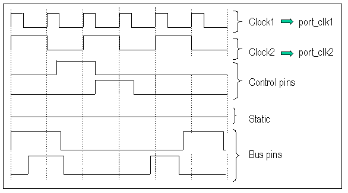

Example of Port Definitions to Save Vector Memory
The following is an example of port allocation for saving vector memory

In this example:
- Set Clock1 and Clock2 into two separate ports. Both ports have the same break vector setup, however, they will be executed at two different frequencies (100MHz and 200MHz) so you also need two different timing ports.
- The Control pins cannot be set to a break state when active. They can be included in the same port as the Bus pins, if possible.
- Pins in a static state should be driven by executing break vectors. However, make sure that their port is set in the multiport burst mode (see Creating a multiport burst) and that the correct wavetable is used for proper static state (high, low, or tri-stated).
- The output pins are not checked and are, by default, masked.
Functional changes
- Introduced before SmarTest 6.3.2